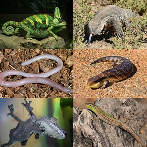

ϩⲁϥⲗⲉ(ⲉ)ⲗⲉ1 S, ϩⲁⲃ.2, ϩⲁϥⲗⲉⲗⲓ3 S, ⲁϥⲗⲉⲗⲓ B, ϩⲁϥⲗⲉⲗⲁ4, ϩⲉϥⲗⲉⲗⲉ5 DM nn f, lizard: Lev 11 30 S1 (var2) B σαύρα سامّ ابرص; P 46 169 S ⲧϩ.3 سحلية; Ora 4 26 S ⲟⲩϩ.2 ⲉⲥⲟⲩⲉⲧⲟⲩⲱⲧ, DM 13 23 ϩ.4 ib 24 26 ϩ.5 ⲛⲥⲉⲧ 11 two-tailed lizard.
| Home | Reports | ⇐ | ͵ⲃ̅ⲧ̅ⲗ̅ⲍ̅ | ⇒ | Reset | Dev |

ⲁϥⲗⲉⲉⲗⲉ SB v ϩⲁϥⲗⲉⲉⲗⲉ.
ⲗⲉⲉⲗⲉ S, ⲗⲉⲗⲓ B in ϩⲁϥⲗ. q v.
ϩⲁϥⲗⲉ(ⲉ)ⲗⲉ1 S, ϩⲁⲃ.2, ϩⲁϥⲗⲉⲗⲓ3 S, ⲁϥⲗⲉⲗⲓ B, ϩⲁϥⲗⲉⲗⲁ4, ϩⲉϥⲗⲉⲗⲉ5 DM nn f, lizard: Lev 11 30 S1 (var2) B σαύρα سامّ ابرص; P 46 169 S ⲧϩ.3 سحلية; Ora 4 26 S ⲟⲩϩ.2 ⲉⲥⲟⲩⲉⲧⲟⲩⲱⲧ, DM 13 23 ϩ.4 ib 24 26 ϩ.5 ⲛⲥⲉⲧ 11 two-tailed lizard.
| view | ⲍⲉⲛⲍⲉⲛ B | (noun masculine) lizard, chameleon2771 |
| view | ⲭⲁⲣⲟⲩⲕⲓ B | (noun masculine) lizard1795 |
| view | ⲧⲉⲗϥⲓ B | (noun feminine) kind of lizard1590 |
| view | ϩⲁⲕⲗϥ SA ϩⲁⲕⲏⲗϥ, ϩⲁⲕⲉⲗϥ, ϩⲁⲛⲕⲗϥ S | (noun masculine) species of lizard [καλαβωτης]2138 |
| view | ⲁⲛⲑⲟⲩⲥ B | (noun masculine) a species of lizard [καλαβωτης]2675 |